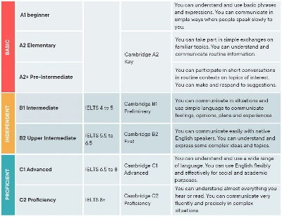

Site Name
Learning English Online Everywhere
Site Purpose And Goals
The purpose of this site is to educate people how to learn English well.
Site Purpose And Goals
We are the best online English tutoring service. We are here to help Indonesians to learn English. English is a language that must and must be mastered because in the future everyone will communicate in English. In addition, Indonesian people will get a better future and jobs. You don't have to worry about the future because we will help you with your English. We provide the skills that are needed for your education in schools and your workplace. Furthermore, many people do not have time to learn English. There are many reasons, such as busy at work, not having the right time, lack of motivation to study, no one to talk to and also not knowing where to study. Don't worry, you have found the best and flexible online English learning platform with a schedule that you can choose. We have morning, afternoon and evening classes. And we also provide Native Speakers from America.
Do you Know Your English Levels ??
We are the best online English tutoring service. We are here to help Indonesians to learn English. English is a language that must and must be mastered because in the future everyone will communicate in English. In addition, Indonesian people will get a better future and jobs. You don't have to worry about the future because we will help you with your English. We provide the skills that are needed for your education in schools and your workplace. Furthermore, many people do not have time to learn English. There are many reasons, such as busy at work, not having the right time, lack of motivation to study, no one to talk to and also not knowing where to study. Don't worry, you have found the best and flexible online English learning platform with a schedule that you can choose. We have morning, afternoon and evening classes. And we also provide Native Speakers from America.
Schedule and Payment
We are the best online English tutoring service. We are here to help Indonesians to learn English. English is a language that must and must be mastered because in the future everyone will communicate in English. In addition, Indonesian people will get a better future and jobs. You don't have to worry about the future because we will help you with your English. We provide the skills that are needed for your education in schools and your workplace. Furthermore, many people do not have time to learn English. There are many reasons, such as busy at work, not having the right time, lack of motivation to study, no one to talk to and also not knowing where to study. Don't worry, you have found the best and flexible online English learning platform with a schedule that you can choose. We have morning, afternoon and evening classes. And we also provide Native Speakers from America.